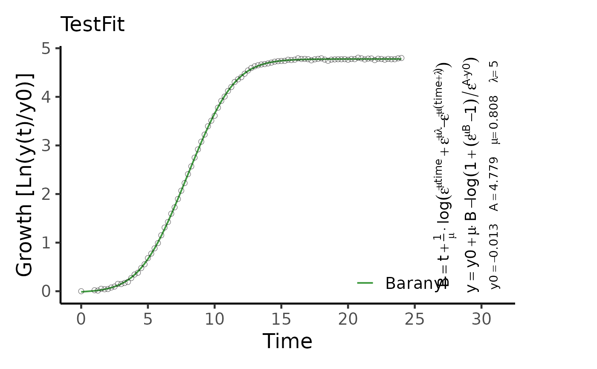

growth.gcFitModel determines a parametric growth model that best describes the data.
Usage
growth.gcFitModel(time, data, gcID = "undefined", control = growth.control())Arguments
- time
Vector of the independent variable (usually time).
- data
Vector of dependent variable (usually growth values).
- gcID
(Character) The name of the analyzed sample.
- control
A
grofit.controlobject created withgrowth.control, defining relevant fitting options.
Value
A gcFitModel object that contains physiological parameters and information about the best fit. Use plot.gcFitModel to visualize the parametric fit and growth equation.
- raw.time
Raw time values provided to the function as
time.- raw.data
Raw growth data provided to the function as
data.- gcID
(Character) Identifies the tested sample.
- fit.time
Fitted time values.
- fit.data
Fitted growth values.
- parameters
List of determined growth parameters.
A: Maximum growth.dY: Difference in maximum growth and minimum growth of the fitted model.mu: Maximum growth rate (i.e., maximum in first derivative of the spline).lambda: Lag time.b.tangent: Intersection of the tangent at the maximum growth rate with the abscissa.fitpar: For some models: list of additional parameters used in the equations describing the growth curve.integral: Area under the curve of the parametric fit.
- model
(Character) The model that obtained the fit with the lowest AIC, determined by
AIC.- nls
nlsobject for the chosen model generated by thenlsfunction.- reliable
(Logical) Indicates whether the performed fit is reliable (to be set manually).
- fitFlag
(Logical) Indicates whether a parametric model was successfully fitted on the data.
- control
Object of class
grofit.controlcontaining list of options passed to the function ascontrol.
References
Matthias Kahm, Guido Hasenbrink, Hella Lichtenberg-Frate, Jost Ludwig, Maik Kschischo (2010). grofit: Fitting Biological Growth Curves with R. Journal of Statistical Software, 33(7), 1-21. DOI: 10.18637/jss.v033.i07
See also
Other growth fitting functions:
growth.drFit(),
growth.gcBootSpline(),
growth.gcFitLinear(),
growth.gcFitSpline(),
growth.gcFit(),
growth.workflow()
Examples
# Create random growth dataset
rnd.dataset <- rdm.data(d = 35, mu = 0.8, A = 5, label = 'Test1')
# Extract time and growth data for single sample
time <- rnd.dataset$time[1,]
data <- rnd.dataset$data[1,-(1:3)] # Remove identifier columns
# Perform parametric fit
TestFit <- growth.gcFitModel(time, data, gcID = 'TestFit',
control = growth.control(fit.opt = 'm'))
#> --> Try to fit model logistic
#> ....... OK
#> --> Try to fit model richards
#> ....... OK
#> --> Try to fit model gompertz
#> ....... OK
#> --> Try to fit model gompertz.exp
#> ... ERROR in nls(). For further information see help(growth.gcFitModel)
#> --> Try to fit model huang
#> .......... OK
#> --> Try to fit model baranyi
#> ........ OK
#>
#> Best fitting model: ~baranyi
plot(TestFit, basesize = 18, eq.size = 1.5)
#> Scale for y is already present.
#> Adding another scale for y, which will replace the existing scale.
#> Scale for colour is already present.
#> Adding another scale for colour, which will replace the existing scale.
